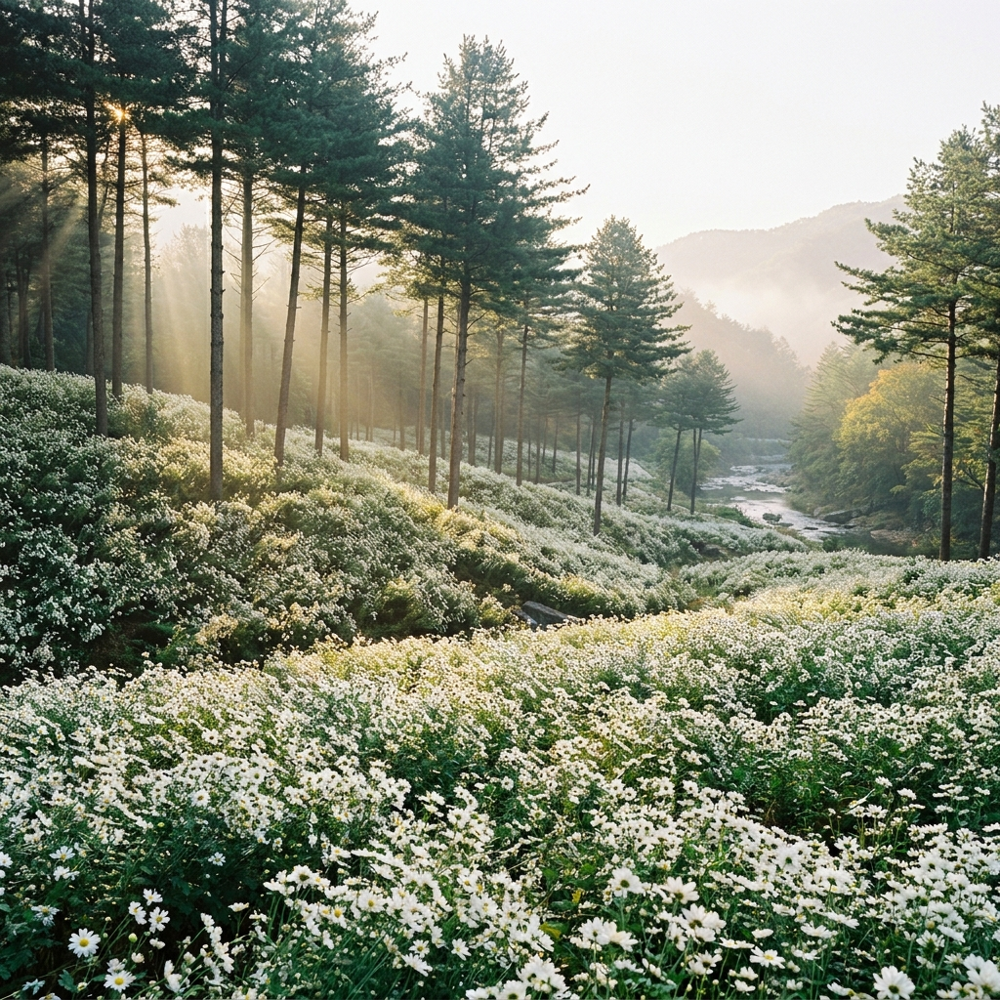
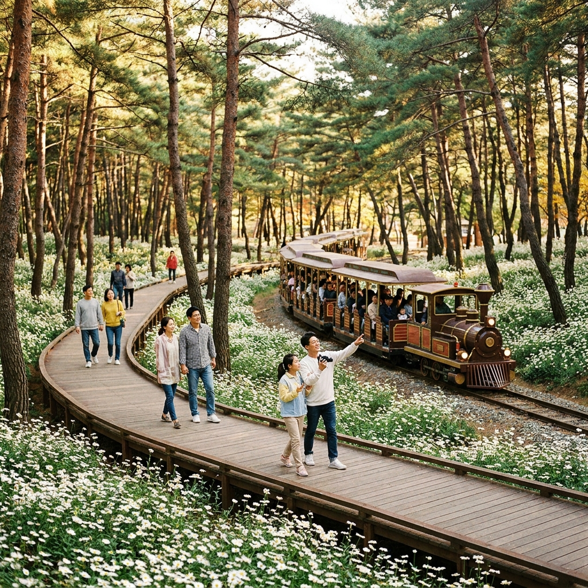
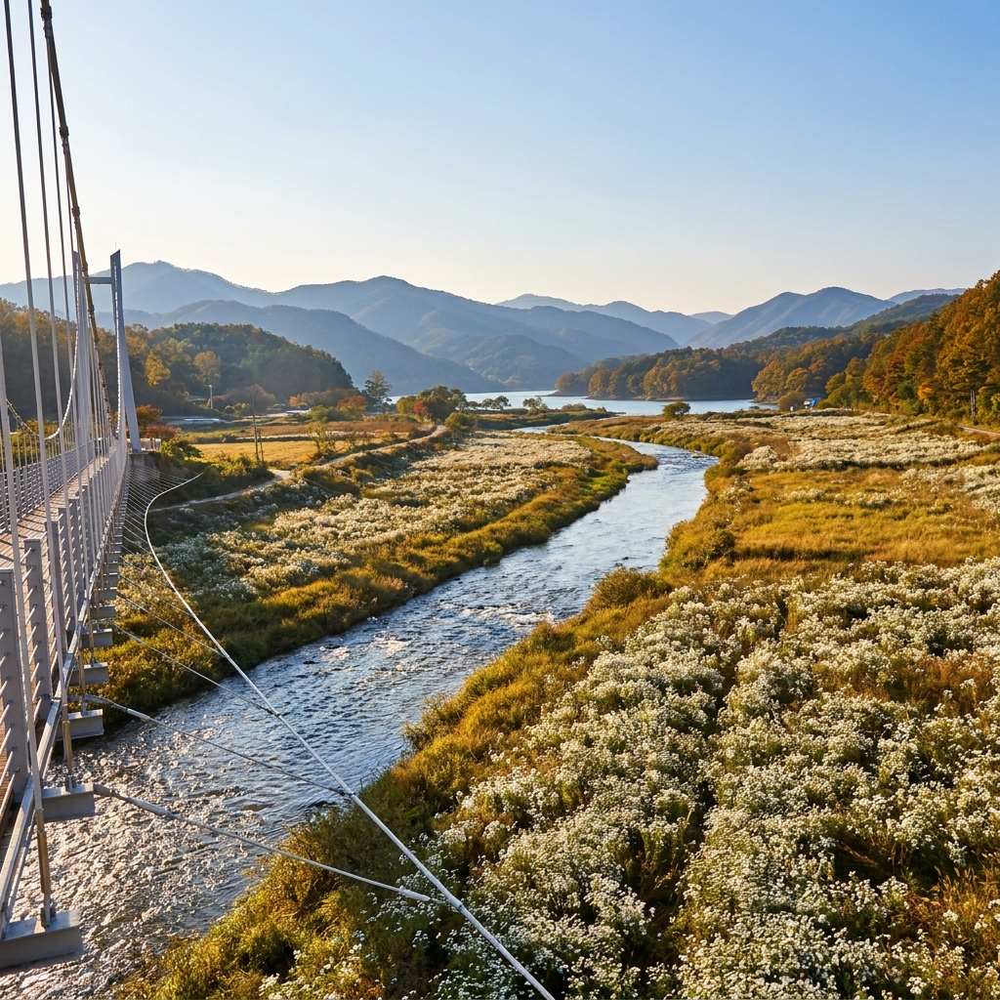

정읍 구절초 지방정원 꽃축제 일정과 입장료 환급 팁 — 옥정호 솔숲 둘레길 소요시간과 주차 체크리스트
가을이 깊어갈 때 전국을 하얗게 수놓는 들꽃의 여왕, 바로 구절초입니다. 전북특별자치도 정읍시 산내면에 자리한 '구절초 지방정원'은 옥정호 상류 추령천을 끼고 완만한 솔숲 언덕 전체에 약 15만㎡(약 4만 5천 평) 규모의 은빛 구절초 군락이 펼쳐지는 대한민국 대표 가을 힐링 명소입니다.
2026년 제19회를 맞이하는 정읍 구절초 꽃축제는 10월 8일부터 18일까지 열흘간 성대하게 펼쳐집니다. 오늘 포스팅에서는 2026 축제 핵심 일정과 입장료 중 일부를 지역 상품권으로 돌려받는 환급 꿀팁, 솔숲 둘레길 5개 코스별 소요시간, 그리고 주차장별 무료 셔틀버스 이용 전략을 상세히 정리해 드립니다.

소나무 숲 언덕을 따라 하얀 눈이 내린 듯 만개한 정읍 구절초 군락지 전경 / AI 제작 이미지
01 | 2026 제19회 정읍 구절초 꽃축제 일정과 테마
'제19회 정읍 구절초 꽃축제'는 2026년 10월 8일(목)부터 10월 18일(일)까지 11일간 정읍시 산내면 매죽리 구절초 지방정원 일원에서 개최됩니다. 2026년 축제의 주제는 '솔숲 잠시 머물며, 구절초 치유를 품다'로, 단순한 꽃 관람을 넘어 숲속에서 쉼과 여유를 즐기는 체류형 치유 정원으로 꾸며집니다.
개막 축하공연은 10월 10일(토) 오후 3시 잔디광장 특설무대에서 화려하게 열리며, 축제 기간 동안 김영희·정범균의 힐링 토크콘서트(10월 9일), 나태주 시인과 함께하는 시와 음악 콘서트(10월 18일) 등 다양한 문화 예술 행사가 매일 이어집니다.
은은한 솔향기와 구절초의 그윽한 가을 향기가 어우러지는 이 시기에는 아침 물안개와 솔숲 사이로 쏟아지는 햇살이 어우러져 전국 사진작가들의 발길이 끊이지 않습니다.
02 | 입장료 요금표와 4,000원 정원사랑 상품권 환급 사용처
정읍 구절초 꽃축제는 유료로 운영되지만, 지불한 입장료의 상당 부분을 현장에서 사용할 수 있는 '정원사랑 상품권'으로 돌려주기 때문에 실질적인 체감 요금은 매우 저렴합니다.
| 구분 |
입장료 |
정원사랑 상품권 환급액 |
실질 부담 금액 |
| 일반 성인 (만 19세 이상) |
7,000원 |
4,000원 환급 |
3,000원 |
| 청소년·군인·경로우대 |
5,000원 |
3,000원 환급 |
2,000원 |
| 어린이 (만 7세~12세) |
3,000원 |
2,000원 환급 |
1,000원 |
| 정읍시민 / 만 6세 이하 |
무료 (신분증 지참) |
환급 없음 |
0원 |
💡 상품권 알뜰 활용법: 매표 시 수령한 정원사랑 상품권은 축제장 내부의 먹거리 장터(파전, 국수, 도토리묵 등)와 농특산물 판매 부스, 구절초 족욕장, 꽃열차 탑승권 구매 시 현금과 동일하게 결제할 수 있습니다. 뿐만 아니라 정읍 시내 전통시장 및 유명 쌍화차거리 가맹점에서도 축제 기간 내 사용이 가능합니다.
03 | 구절초 지방정원 5개 산책 코스별 소요시간과 난이도 비교표
구절초 지방정원은 면적이 매우 넓기 때문에 동선을 계획 없이 걸으면 금방 지칠 수 있습니다. 정원 내 산책로는 테마별로 5개 코스로 구분되어 정비되어 있습니다.
| 코스명 |
주요 경유지 |
거리 / 소요시간 |
추천 대상 및 특징 |
| 1코스 (솔숲 힐링 코스) |
만남의광장 → 솔숲 구절초 언덕 → 쉼터 |
약 1.2 km / 30분 |
가장 핵심적인 하얀 꽃물결 감상, 완만한 흙길 |
| 2코스 (수변 산책 코스) |
추령천 수변데크 → 돌다리 → 생태연못 |
약 1.8 km / 45분 |
물소리와 물안개, 수크렁 갈대밭 조화 |
| 3코스 (전망대 하늘 코스) |
하늘전망대 → 사랑의 우체통 → 유색벼 아트 |
약 2.0 km / 50분 |
정원 전체와 유색벼 논그림 파노라마 조망 |
| 4코스 (체험 테마 코스) |
꽃열차 정류장 → 족욕체험장 → 출렁다리 |
약 1.5 km / 40분 |
어린이·어르신 동반 가족 추천 코스 |
| 5코스 (외곽 둘레길 완주) |
1~4코스 외곽 연계 전체 둘레길 |
약 4.2 km / 1시간 40분 |
가벼운 트레킹을 즐기는 도보 여행자 추천 |
가장 인기 있는 기본 동선은 1코스 솔숲 힐링 코스를 통과해 3코스 하늘전망대에서 유색벼 아트 논그림을 감상한 뒤, 2코스 수변 산책로로 내려오는 '핵심 순환 2.5km 코스(약 1시간 10분 소요)'입니다.
04 | 솔숲 구절초 은빛 바다와 최고의 사진 촬영 명당 포인트
구절초 지방정원에서 가장 아름다운 사진을 담을 수 있는 1순위 명당은 '소나무 숲 힐링 산책로 중간 쉼터 언덕'입니다. 하늘 높이 뻗은 적송의 붉은 줄기 사이로 빽빽하게 피어난 하얀 구절초가 겹겹이 층을 이루며 몽환적인 원근감을 만들어냅니다.
두 번째 명소는 '하늘전망대'입니다. 이곳에 오르면 발아래로 펼쳐진 순백의 꽃동산은 물론, 추령천 너머 들판에 유색 벼를 심어 완성한 거대한 논그림 아트를 한눈에 내려다볼 수 있습니다. 매년 정읍의 상징과 가을 테마를 담은 논그림이 화제가 됩니다.
아침 8시에서 9시 30분 사이, 혹은 오후 4시 30분 이후의 부드러운 햇살 아래에서 인물 사진을 촬영하면 꽃잎의 투명한 질감과 인물의 실루엣이 한 폭의 수채화처럼 담깁니다.

솔숲 산책로를 지나는 아기자기한 구절초 꽃열차와 가을꽃을 즐기는 탐방객들 / AI 제작 이미지
05 | 옥정호 출렁다리와 짚와이어, 구절초 꽃열차 탑승 팁
다리가 불편한 부모님이나 어린 자녀와 함께 방문했다면 정원 내부를 순환하는 '구절초 꽃열차'를 적극 활용해 보세요. 귀여운 무개차 형태로 제작된 꽃열차는 정원 주요 포인트를 약 20분에 걸쳐 천천히 돌며 시원한 가을바람과 함께 꽃밭을 조망할 수 있어 인기가 매우 높습니다.
추령천을 가로지르는 '출렁다리' 역시 놓치지 말아야 할 체험 코스입니다. 걸을 때마다 기분 좋게 흔들리는 다리 위에서 내려다보는 수변 구절초와 은빛 억새의 조화가 일품입니다.
좀 더 스릴 있는 액티비티를 원하신다면 출렁다리 인근에 설치된 '짚와이어'를 타고 시원하게 계곡 위를 활강하며 구절초 꽃밭 전체를 공중에서 내려다보는 짜릿한 경험을 만끽할 수 있습니다.
06 | 1주차장부터 5주차장까지 위치별 혼잡도와 무료 셔틀버스 노선
축제 기간 동안 주차장은 제1주차장부터 제5주차장까지 분산 운영됩니다. 행사장과 가장 가까운 제1·제2주차장은 주말 오전 9시 30분이면 이미 만차에 도달합니다.
따라서 주말 오전 10시 이후에 도착하셨다면 무리하게 안쪽으로 진입하지 마시고, 산내면 소재지 방면의 제4주차장(임시주차장)이나 제5주차장으로 곧바로 진입하는 것이 훨씬 빠릅니다.
외곽 임시주차장에서는 축제장 정문 매표소까지 무료 셔틀버스가 5~8분 간격으로 상시 운행됩니다. 셔틀버스 전용차로를 이용하므로 정체 구간을 우회하여 5분 만에 행사장 입구에 편안하게 하차할 수 있습니다.

출렁다리 전망대에서 바라본 추령천 수변과 하얗게 물든 구절초 정원의 파노라마 / AI 제작 이미지
07 | 축제장 먹거리 장터 가격대와 정읍 쌍화차거리 연계 팁
정원 관람을 마친 후 출출해진 배는 축제장 내 향토 먹거리 장터에서 채울 수 있습니다. 산내면 부녀회와 지역 상인들이 운영하는 장터에서는 정읍 한우 소고기국밥, 산나물 비빔밥, 해물파전, 도토리묵 무침 등을 8,000원~15,000원 선의 합리적인 가격에 맛볼 수 있습니다.
식사 후에는 축제장에서 차량으로 약 25분 거리에 위치한 정읍 시내 '전설의 쌍화차거리'를 방문하는 것을 강력히 추천합니다. 정읍 쌍화차는 숙지황, 당귀, 천궁 등 20여 가지 한약재를 곱돌 도자기에 넣고 장시간 옹골지게 달여내 밤, 은행, 잣을 듬뿍 띄워냅니다.
환급받은 정원사랑 상품권을 사용할 수 있는 전통 찻집도 다수 입점해 있어, 쌀쌀해진 가을 오후 뜨끈한 쌍화차 한 잔으로 몸을 녹이며 완벽한 당일치기 힐링 여정을 완성할 수 있습니다.
08 | 옥정호 붕어섬 출렁다리와 국사봉 전망대 가을 드라이브 코스
구절초 지방정원 나들이를 더욱 풍성하게 만들어주는 연계 드라이브 명소는 바로 인근 임실 옥정호입니다. 정원에서 지방도 715호선을 따라 옥정호 수변도로를 달리는 약 20분 코스는 전국에서도 손꼽히는 가을 호반 드라이브 길입니다.
옥정호 한가운데 떠 있는 붕어섬을 연결하는 '옥정호 출렁다리'를 방문하면 호수 위를 걷는 듯한 색다른 풍경을 감상할 수 있습니다.
또한 체력적 여유가 있다면 국사봉 전망대 데크에 올라보세요. 이른 아침 옥정호에 피어오르는 자욱한 물안개와 그 사이로 드러나는 붕어 모양의 섬 풍경은 가을 남도 여행 최고의 비경으로 기억될 것입니다.
09 | 정읍 구절초 축제 당일치기 방문 전 필수 체크리스트
가을 향기 가득한 정읍 구절초 축제를 200% 완벽하게 즐기기 위한 핵심 점검 사항을 확인하세요.
📋 구절초 축제 방문 5대 꿀팁 체크리스트
1. 오전 9시 이전 도착 권장: 주말 방문 시 오전 9시 30분부터 진입로 정체가 시작되므로 아침 일찍 서두르세요.
2. 편안한 운동화 착용: 솔숲 산책로는 흙길과 목재 데크로 이루어져 있으므로 굽 높은 구두보다는 푹신한 운동화가 필수입니다.
3. 정원사랑 상품권 챙기기: 입장권에 부착된 상품권은 잃어버리지 마시고 장터나 쌍화차거리에서 당일 알뜰하게 결제하세요.
4. 가벼운 겉옷 준비: 솔숲 언덕과 수변은 바람이 불어 기온이 쌀쌀하므로 걸칠 수 있는 카디건이나 바람막이를 지참하세요.
5. 정읍 쌍화차거리와 옥정호 연계: 축제장 관람(2~3시간) 후 쌍화차 한 잔과 호반 드라이브를 묶어 반나절 힐링 코스를 완성하세요.
은은한 국화 향기가 바람을 타고 번지는 10월, 정읍 구절초 지방정원의 하얀 솔숲 바다에서 잊지 못할 가을의 추억을 만들어 보시기 바랍니다.
#정읍구절초축제
#구절초지방정원
#정읍가볼만한곳
#옥정호출렁다리
#정읍쌍화차거리
#가을꽃축제
#구절초개화시기
#정원사랑상품권
#가을솔숲산책
#전북가을여행